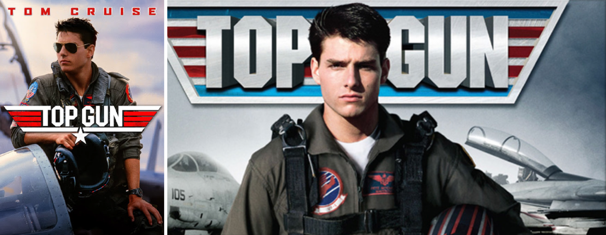
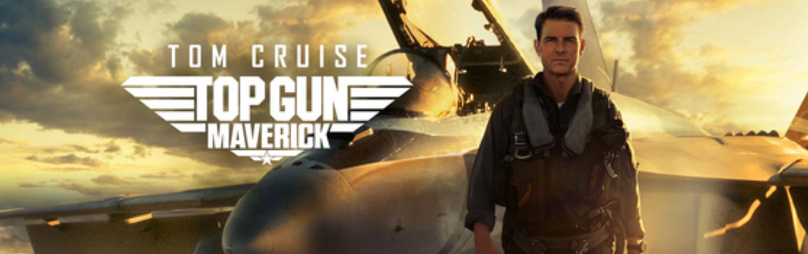
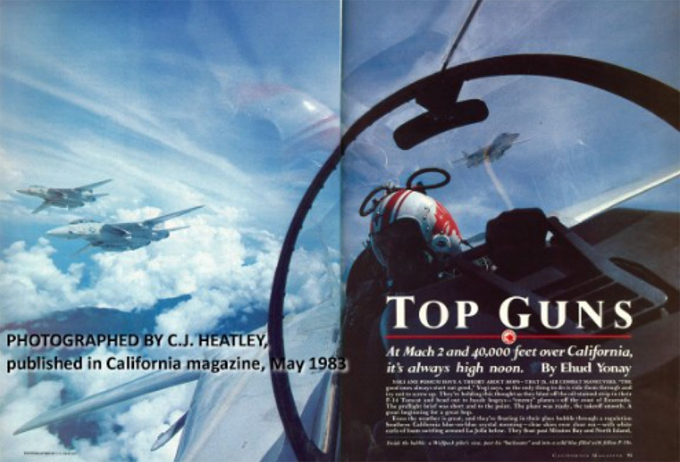
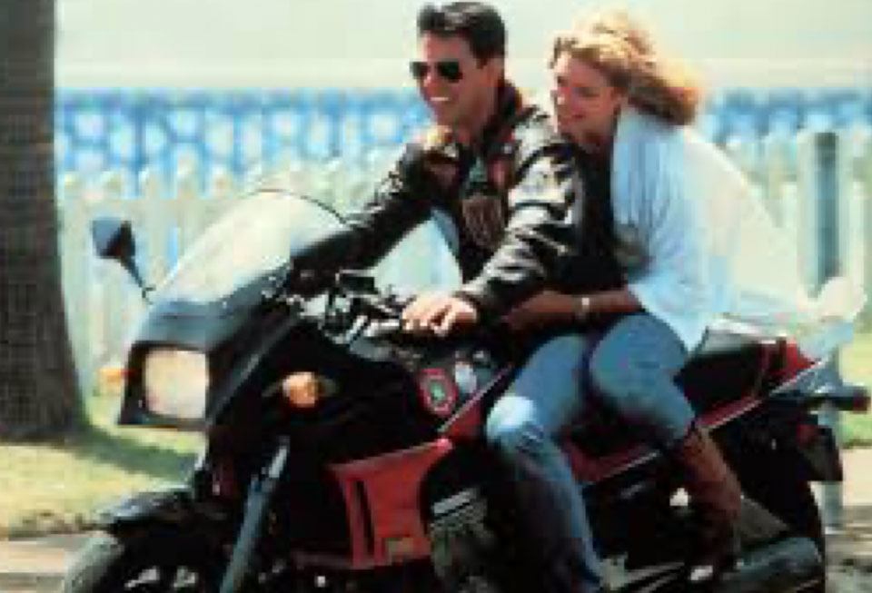

01 사안의 개요
파라마운트, 1983년 기사 <탑건즈>에 대한 저작권 양수
에후드 요나이(Ehud Yonay, 1940 – 2012)는 1983년 5월경 자신이 쓴
11페이지 분량의 기사 <탑건즈>를 캘리포니아
매거진(California Magazine)에 게재했다. <탑건즈>는 전투기
고급 공중전 전술을 가르치는 미 해군 프로그램을 다루면서 탑건
프로그램의 역사, 문화, 배경을 논의하며 F-14 전투기를 조종하는
경험을 생생하게 묘사했다. 이 기사는 실존 인물인 요기(Yogi)와
포섬(Possum)이라는 콜사인을 가진 두 대위가 전투기 조종사가
되기로 결심한 과정과 해군 항공대, 탑건 프로그램에서의 경험을
묘사하는 데 초점을 두었다.
요나이는 <탑건즈>가 출간된 직후 파라마운트
픽처스(Paramount Pictures)에게 <탑건즈> 기사에 대한 모든
권리를 부여했다. 그 대가로 파라마운트는 요나이에게 정해진 금액을
지급했고, 파라마운트가 제작하고 해당 기사에 실질적으로
기반하거나 해당 기사를 각색한 모든 영화에서 요나이에게 크레딧을
부여하기로 합의했다.
파라마운트, 1986년 영화 <탑건> 개봉
파라마운트는 1986년 장편 영화 <탑건>을 개봉했다.
크레딧에는 영화가 요나이의 기사에 “영감을 받았다(suggested
by)”고 적혀 있다. 영화 <탑건>은 상업적으로 큰 성공을
거두었다.
이 영화는 매버릭(Maverick)과 구스(Goose)라는 콜사인을 가진 해군
대위의 탑건 프로그램 경험을 따라간다. 매버릭은 또 다른 대위인
아이스맨(Iceman)과 최고 훈련생 자리를 놓고 경쟁한다.

▲ 출처: 파라마운트 픽처스저작자의 상속인들, 2020년 종결권 행사
<탑건즈> 기사의 저작자인 요나이는 2012년 사망했고,
요나이의 미망인 쇼쉬(Shosh)와 아들 유발(Yuval)이 기사에 대한
저작권을 상속받아 보유하게 되었다. 요나이의 상속인들은 2020년
미국연방저작권법 § 203(a)(3)을 근거로 요나이와 파라마운트 사이의
계약을 종결했다.
미국연방저작권법 § 203(a)(3)은 저작자의 상속인이 저작자가 생전에
한 저작권 허여(grant)를 종결할 수 있도록 허용한다. 1
파라마운트, 2022년 영화 <탑건: 매버릭>개봉
파라마운트는 2022년 영화 <탑건>의 속편인 <탑건: 매버릭>을 개봉했다. <탑건: 매버릭>은 <탑건>이 끝난 지 수십 년 후를 배경으로 한다. 주인공인 매버릭은 현재 대령이 되었고, 아이스맨은 제독으로 미 태평양 함대를 지휘하고 있다. 매버릭이 실험용 극초음속 제트를 추락시키자, 아이스맨은 매버릭을 탑건으로 보내 외국 적의 우라늄 농축 공장을 파괴하는 임무를 위해 프로그램 졸업생들을 훈련하도록 한다. <탑건>과 마찬가지로 <탑건: 매버릭>도 상업적으로 큰 성공을 거두었다. 파라마운트는 요나이의 상속인들에게 보상을 하지 않았고, 영화에서 요나이에게 크레딧을 부여하지도 않았다.

▲ 출처: 파라마운트 픽처스02 미국 법원의 판단
1심 법원의 판단2
요나이의 상속인들은 2022년 파라마운트를 상대로 저작권 침해와
계약 위반을 주장하며 미국 캘리포니아 중부 지방법원에 소송을
제기했다. 1심 법원은 처음에는 파라마운트의 소각하 신청(motion to
dismiss)을 기각했으나, 2024년 4월 파라마운트의 약식판결
신청(motion for summary judgment)을 인용했다. 약식판결 단계에서
실질적 유사성(substantial similarity)을 판단할 때는 내재적
테스트(intrinsic test)가 아니라 외재적 테스트(extrinsic test)를
적용한다. 내재적 테스트는 두 작품 간의 유사성에 대한 일반인의
주관적인 인상을 검토하는 테스트이며 전적으로 배심원의 영역에
속한다. 외재적 테스트는 문제의 작품들을 객관적으로 분석하여
‘실질적으로 유사한지’를 판단하는 테스트를 말한다. 외재적
테스트에 따르면, 법원은 먼저 친숙한 상투적인 장면과 같이
보호받을 수 없는 요소들을 걸러낸 다음 두 작품의 보호받을 수 있는
요소들이 실질적으로 유사한지 여부만을 판단하는 분석적 검토를
한다.
요나이의 상속인들은 1983년 잡지 기사 <탑건즈>와 2022년
영화 <탑건: 매버릭>이 “줄거리, 사건 전개, 속도, 주제,
분위기, 대화, 등장인물, 배경 등이 유사하기 때문에 실질적으로
유사하다”고 주장했다. 하지만 1심 법원은 해당 기사와 속편 영화의
유사 요소는 사실적인 것이므로 저작권법의 보호를 받지 않는다고
판단했다.
“1983년 잡지 기사 <탑건즈>와 2022년 영화 <탑건:
매버릭>은 모두 탑건과 여러 졸업생 및 교관들을 등장시키지만,
탑건은 실제 전투기 조종사 훈련 학교이고 기사에 언급된 졸업생과
교관들은 실존 인물(예: ‘요기’와 ‘포섬’)이다. 이러한 사실적
요소는 저작권법의 보호를 받지 않는다. 또한 두 작품 모두 전투기
조종사의 훈련과 임무 수행을 다루고 있지만, 이러한 일반적인
줄거리 아이디어 역시 보호 대상이 아니다. 원고들이 전투기
조종사가 항공모함에 착륙하고, 비행 중 격추되고, 술집에서
흥청거리는 장면을 묘사하거나 기술했다는 이유로 두 작품이
유사하다고 주장하는 것은, 보호받지 못하는 사실, 친숙한
상투적인 장면, 즉 ‘필수장면’(scènes à faire)에 불과하다.
보호받지 못하는 요소에 기반한 유사점을 제외하면, 두 작품의
줄거리는 서로 다르다.”
즉 1심 법원은 외재적 테스트를 적용하여 2022년 영화 <탑건:
매버릭>이 1983년 잡지 기사 <탑건즈>와 실질적으로
유사하지 않다고 판단하였다.
한편 1심 법원은 파라마운트가 2022년 영화 <탑건:
매버릭>에서 요나이의 이름을 표기하지 않아 1983년 체결한
계약을 위반했다는 주장에 대해서도 파라마운트에게 유리한
약식판결을 내렸다. 법원은 상속인들의 주장이 성립하려면 2022년
영화 <탑건: 매버릭>이 (i) 권리 양도 계약에 따라 제작되었고
(ii) 1983년 잡지 기사 또는 그 어떤 버전이나 각색본을 실질적으로
기반으로 한다는 두 가지 요건을 모두 충족해야 한다고 판시했다.
1심 법원은 상속인들이 2020년 1월 24일자로 권리양도 계약을 종결한
다음에도 속편 영화 제작이 계속된 점을 고려하면 속편 영화가
1983년 체결된 권리양도 계약에 따라 제작된 것이 아니며, 또한
1983년 기사의 저작권을 침해하지 않았으므로 요나이의 권리양도
계약과는 별개로 영화가 제작되었다고 보았다. 법원은 영화
<탑건>이 기사 <탑건즈>를 각색한 것인지, 영화
<탑건: 매버릭>이 기사 <탑건즈>의 각색본을 기반으로
한 것인지에 대해서는 판단하지 않았다.

▲ 출처: 캘리포니아 매거진, 1983년 5월 <탑건즈> 기사의 표지 사진
▲ 출처: 파라마운트 픽처스2심 법원의 판단3
2심 법원인 제9 연방항소법원은 개별 요소에 대한 실질적 유사성
인정 여부를 판단한 다음 “선택 및 배열”(selection and
arrangement)에 기반한 상속인들의 주장을 검토했다.
요나이의 상속인들은 줄거리, 사건의 순서, 등장인물, 대화, 주제,
분위기, 배경, 속도 등 각 요소에 유사성이 있다고 주장했다. 2심
법원은 상속인들이 유사성을 입증하지 못했다는 1심 법원의 판단에
동의했다. 2심 법원은 상속인들의 주장에 만연한 문제점을
지적했는데, 1983년 기사 <탑건즈>에는 생생한 표현과
혁신적인 구성 등 독창적이고 보호받는 표현이 많이 포함되어 있지만
그러한 표현이 2022년 영화 <탑건: 매버릭>에는 전혀 나타나지
않는다는 것이다.
요나이의 상속인들은 1심 법원이 보호받지 않는 요소(unprotected
element)만을 기준으로 작품의 선택과 배열을 비교한 것은 잘못이며,
선택과 배열 분석은 보호받는 요소와 보호받지 않는 요소를 포함한
모든 요소를 고려해야 한다고 주장했다. 2심 법원은 독창적인 선택과
배열에는 보호받을 수 있는 요소와 보호받을 수 없는 요소가 모두
포함될 수 있으며, 그러한 경우 법원은 모든 요소의 선택과 배열을
비교해야 한다는 점에는 동의했다. 하지만 2심 법원은 요나이의
상속인들이 두 작품이 보호 대상이든 보호 대상이든 관계없이 많은
유사 요소를 공유한다는 사실만 입증하면 선택 및 배열 이론에 따라
승소할 수 있다고 주장하는 것은 외재적 테스트(extrinsic test)에
대한 오해를 드러내는 것이라고 판시했다.
외재적 테스트를 적용하는 법원은 보호받지 못하는 요소를 걸러내야
하며, “걸러내기”(filtering)와 “선택 및 배열”(selection and
arrangement)은 엄밀히 말하면 별개의 기준이 아니다.4
두 기준은 모두 피고가 보호받을 수 없는 요소 외에 다른 것을
복제했는지 여부를 묻는다. 기사 <탑건즈>에서
걸러내기(filtering)를 거친 뒤 남는 보호 가능한 표현은 영화
<탑건: 매버릭>와 실질적으로 유사하지 않았고, “선택 및
배열”(selection and arrangement) 주장도 단순히 사실을 나열한
수준이라 보호 대상이 되지 않는다.
요소들 자체가 보호받을 수 있는지 여부와 관계없이 요소들의 선택과
배열이 독창적이라면 보호받을 수 있다. 두 작품 간 요소들의 선택과
배열을 비교할 때 요소들의 유사성만으로는 그 요소들의 양이나
작품에서의 중요성과 관계없이 불법적인 이용을 입증할 수 없다.
실질적으로 유사하다고 인정받으려면, 두 작품이 특정하고 일관성
있는 패턴, 합성 또는 디자인을 공유해야 한다.5
요나이의 상속인들은 1983년 잡지 기사 <탑건즈>와 2022년
영화 <탑건: 매버릭>이 공유하는 “패턴”을 입증하려 했지만,
법원은 요나이의 상속인들이 주장한 “패턴”은 요나이의 저작권이
있는 기사에 담긴 독창적인 표현이 아니라고 판단했다.
- 제203조 저작자에 의한 이전과 이용허락의 종결 (a) 종결의 요건 – 업무상저작물 이외의 저작물의 경우에, 유언에 의한 경우를 제외하고, 저작자가 1978년 1월 1일 이후에 저작권 또는 저작권을 구성하는 권리를 배타적 또는 비배타적으로 허여(grant)한 이전 또는 이용허락은 다음의 조건에 따라 이를 종결할 수 있다. (3) 허여의 종결은 허여가 이루어진 날로부터 35년이 지난 때로부터 기산하여 5년의 기간 동안 언제든지 행사할 수 있다. 또는 허여가 저작물의 발행권을 포함하는 경우에는, 그 기간은 그 허여에 따라 저작물이 발생된 날로부터 35년 또는 허여가 시행된 날로부터 40년 중 빨리 도래하는 기간의 말로부터 기산한다.
- Yonay v. Paramount Pictures Corp., No. 2:22-cv-03846-PA-GJS (C.D. Cal. Apr. 5, 2024).
- Yonay v. Paramount Pictures Corp., No. 24-2897 (9th Cir. Jan. 2, 2026).
- Hanagami v. Epic Games, Inc., 85 F.4th 931, 943 (9th Cir. 2023).
- Skidmore as Tr. for Randy Craig Wolfe Tr. v. Led Zeppelin, 952 F.3d 1051, 1064 (9th Cir. 2020) (en banc).